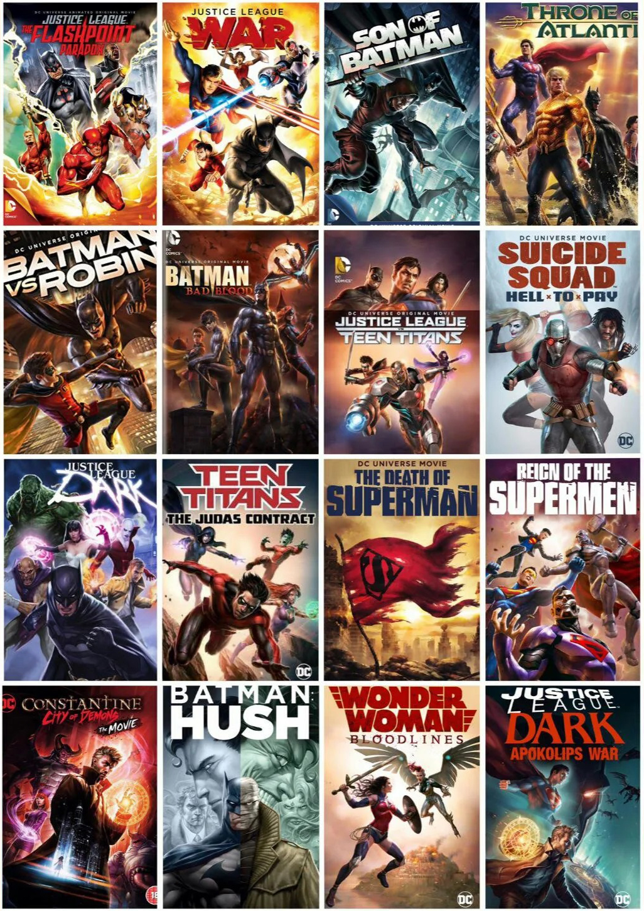

El Universo Cinematográfico de DC (DCEU) tuvo graves errores en muchas de sus películas en el cine; sin embargo, su Universo Animado es un éxito y te enseñamos cómo verlo en el orden correcto.

Cuando se habla de universos cinematográficos o televisivos de superhéroes, es imposible no mencionar a los dos grandes gigantes de este género: Marvel Studios y DC. Ambas compañías han creado sus propias continuidades en la pantalla chica y grande, siendo el primero quien parece haber predominado en los últimos años.
Sin embargo, DC ha crecido en otro ámbito en el que Marvel no ha tenido tanta suerte: el Universo Animado. La compañía de cómics ha creado su propio Universo Cinematográfico Animado que le ha permitido llegar a la audiencia adulta a través de estas animaciones, presentando historias muy conocidas de su complemento en los cómics.
Aunque existen muchas películas que ver de este DCEU, algunos fans se han confudido con cada lanzamiento y necesitan un recuento para saber cuál ver primero
Las películas del Universo Animado de DC en órden
- Flashpoint Paradox (2013)
- Liga de la Justicia: Guerra (2014)
- Hijo de Batman (2014)
- Liga de la Justicia: Trono de Atlantis (2015)
- Batman vs Robin (2015)
- Batman: Mala Sangre (2017)
- Liga de Justicia vs Los Jovenes Titanes (2017)
- Liga de la Justicia Oscura (2017)
- Jovenes Titanes: El Contrato Judas (2017)
- Escuadron Suicida: Hell to Pay (2018)
- La Muerte de Superman (2018)
- Reinado de los SuperHombres (2019)
- Batman: Silencio (2019)
- Wonder Woman: Bloodline (2019)
- Justice League Dark: La Guerra de Apokolips (2020)
Flashpoint Paradox (2013)
Todos deseamos tener la oportunidad de retroceder en el tiempo y cambiar las cosas. Para Flash, esa codiciada oportunidad está a su alcance. Atraviesa el tiempo para enmendar un crimen violento cometido hace décadas contra su madre, pero las ondas de sus buenas intenciones resultan desastrosas, ya que ahora existe una realidad alternativa fracturada en lugar de la familiar. Tropezando a través de esta realidad retorcida donde ni siquiera Superman se encuentra por ningún lado, Flash busca la sabiduría confiable de Batman, solo para encontrar un Caballero Oscuro más valiente y violento en su lugar.
Justice League: War (2014)
Antes de que existiera la Liga de la Justicia... estaba La Guerra. De DC Entertainment, Warner Bros. Animation y Warner Bros. Home Entertainment llega una película animada basada en la novela gráfica 'Justice League: Origin' de Geoff Johns y Jim Lee. ¡Mira la batalla épica entre Darkseid y los miembros recién formados de la Liga de la Justicia, incluidos Superman, Batman, Green Lantern, Wonder Woman, The Flash, Cyborg y Shazam!
Son of Batman (2014)
Un nuevo legado está a punto de comenzar. De DC Entertainment, Warner Bros. Animation y Warner Bros. Home Entertainment llega una película animada basada en la novela gráfica 'Batman: Batman and Son' de Grant Morrison y Andy Kubert, y con la voz de Jason O'Mara, Stuart Allan, Morena Baccarin, Giancarlo Esposito, David McCallum, Xander Berkeley y Thomas Gibson.
Justice League: Throne of Atlantis (2015)
Mientras patrullaba en el Atlántico, toda la tripulación del submarino nuclear USS California muere a manos de un atacante desconocido. En S.T.A.R. Labs, la sede de la Liga de la Justicia, Cyborg recibe la noticia del coronel Steve Trevor. Se teletransporta al submarino a través de un tubo Boom, encuentra huellas de manos en el casco y descubre que faltan misiles nucleares. Cyborg, Flash, Shazam, Superman, Wonder Woman, Green Lantern y Batman inspeccionan el hecho. Diana identifica al enemigo como guerreros de la Atlántida, seres convertidos en criaturas submarinas por el tridente místico de su rey. Superman y Batman deciden conocer al experto en Atlantis Stephen Shin.
Batman vs. Robin (2015)
Cuando Batman se encuentra bajo el ataque de su propio hijo, Damian (Robin), al principio sospecha de la mano de Ra's Al Ghul detrás de la traición, pero luego se da cuenta de que el niño puede estar controlado por una sociedad misteriosa y asesina conocida como la Corte de los búhos.
Batman: Bad Blood (2016)
Cuando Batman desaparece, se necesitará a toda la "familia" Bat, incluidas las nuevas Batwoman y Batwing, para mantener la paz en Gotham City y desentrañar el misterio detrás de la desaparición del Caballero de la Noche en 'Batman: Bad Blood'.
Justice League vs. Teen Titans (2016)
Frustrado y desilusionado por su trabajo junto a la Liga de la Justicia, Robin se ve obligado a tomar una nueva posición con un equipo más joven, los Jóvenes Titanes. Con la fácil bienvenida al equipo, está intrigado por el misterioso Cuervo y la fuerza natural que se cierne sobre ellos – su padre, Trigon – con poder suficiente como para destruir Metrópolis al enfrentar a la poderosa Liga de la Justicia contra los Titanes.
Justice League: Dark (2017)
Mientras patrullaba en el Atlántico, toda la tripulación del submarino nuclear USS California muere a manos de un atacante desconocido. En S.T.A.R. Labs, la sede de la Liga de la Justicia, Cyborg recibe la noticia del coronel Steve Trevor. Se teletransporta al submarino a través de un tubo Boom, encuentra huellas de manos en el casco y descubre que faltan misiles nucleares. Cyborg, Flash, Shazam, Superman, Wonder Woman, Green Lantern y Batman inspeccionan el hecho. Diana identifica al enemigo como guerreros de la Atlántida, seres convertidos en criaturas submarinas por el tridente místico de su rey. Superman y Batman deciden conocer al experto en Atlantis Stephen Shin.
Teen Titans: Judas Contract (2017)
Tara Markov es una joven que tiene poderes sobre la tierra y la piedra. ¿Es la nueva Teen Titan un aliado o una amenaza? ¿Y cuáles son los planes del mercenario Deathstroke para los Titanes?
SUICIDE SQUAD: Hell to Pay (2018)
Cuando a Amanda Waller se le diagnostica una enfermedad terminal, vuelve a reunir al Task Force X para recuperar una mística carta negra llamada Get Out of Hell Free.
The Death Of Superman (2018)
El Hombre de Acero se encuentra con su último combate cuando Doomsday llega a la Tierra, empeñado en destruir todo y a todos en su camino, incluida la Liga de la Justicia, en la nueva y llena de acción 'The Death of Superman', parte de la popular serie de Películas del Universo DC.
Reign Of The Supermen (2019)
Tras el sacrificio de Superman para derrotar a Doomsday, el mundo se ha llenado de nuevas versiones del superhéroe que tratan de luchar contra el crimen, con personajes variopintos como Superboy, Steel, Cyborg Superman o Eradicator cuya función social es duramente criticada por los medios. Continuación de la película de 2018 “La muerte de Superman.
Batman: Hush (2019)
Un misterioso villano titiritero de las fuerzas más peligrosas de Gotham lleva al Caballero de la Noche a aguas desconocidas en 'Batman: Hush', la entrega de la popular serie de películas del Universo DC. Producida por Warner Bros. Animation y DC.
Wonder Woman: Bloodlines (2019)
En 'Wonder Woman: Bloodlines', la princesa amazona Diana de Themyscira elige salvar al piloto de combate Steve Trevor y devolverlo a su hogar en Estados Unidos, poniendo en marcha uno de los capítulos más cautivadores de Wonder Woman. Diana, que desempeña el papel tanto de embajadora como de protectora, pronto se gana el nombre de Mujer Maravilla de la gente amable de la Tierra. Igual de fuerte en cuerpo, corazón y voluntad, hace que su misión sea ayudar a una joven con problemas reclutada por una organización mortal conocida como Villainy, Inc., cuyos miembros criminales tienen la mira puesta en invadir Themyscira, el hogar paradisíaco de Diana.
Justice League Dark: Apokolips War (2020)
Culminando seis años de la aventura de 'Justice League: War' en 2014, 'Justice League Dark: Apokolips War' presenta un planeta Tierra totalmente devastado por el tirano intergaláctico Darkseid en el que los superhéroes apenas han podido hacer frente a la guerra. Los últimos bastiones de guerreros que aún quedan en pie deben reagruparse para crear una estrategia que les permita enfrentarse a Darkseid con el propósito de salvar al planeta y a sus pocos supervivientes. Esta es la guerra que acabará con todas las guerras.
